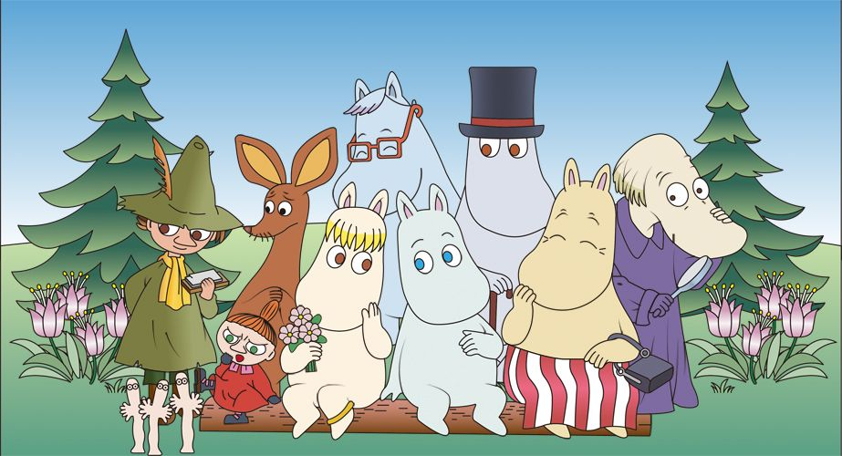
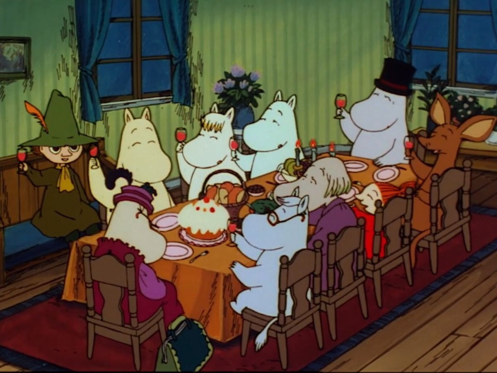

Самые известные экранизации
Приключения муми-троллей экранизировали в разных странах, и у каждой версии есть свой неповторимый стиль.
Особенно полюбились зрителям кукольные мультфильмы, созданные в Советском Союзе в конце 1970-х годов.
Хронология популярных мультфильмов
- «Муми-тролль и другие» (1978) - советский кукольный мультфильм.
- «Муми-тролль и комета» (1978) - продолжение истории.
- «Муми-дол: Всё дело в шляпе» (1980) - цикл мультфильмов о волшебной шляпе.
- «Долина Муми-троллей» (2019) - современный сериал.
Книга, с которой всё началось
Первая книга о муми-троллях вышла в 1945 году и называлась «Маленькие тролли и большое наводнение»
Популярные книги
- «Муми-тролль и комета» (1946)
- «Шляпа волшебника» (1948)
- «Мемуары Муми-папы» (1950)
- «Опасное лето» (1954)

Подробнее о Муми-троллях можно прочитать на странице Википедии.
Ссылка в виде картинки:
